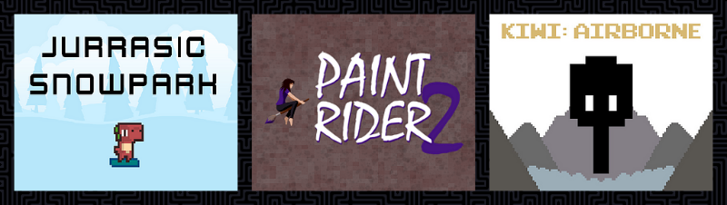
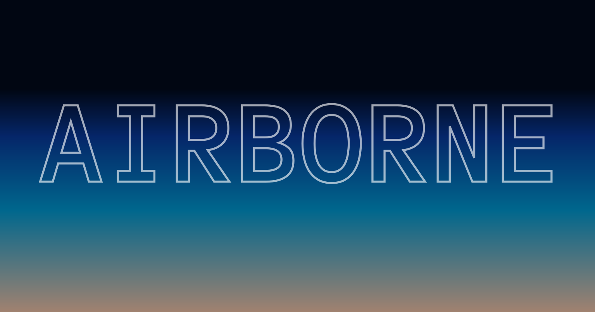

Open Jam 2020 Recap
Open Jam 2020 was the second Open Jam. For 80 hours, from September 18-21st, Open Jammers made twenty-seven open source games, using open source tools. The theme was AIRBORNE.

After a round of peer voting, the results are in!
Created by Alligator Ventures; in this game you play as a snowboarding dinosaur. Take to the slopes, earn money to buy upgrades for your snowboard.
Created with: Godot, BFXR, Paint.net, Ableton, and Audacity
Created by FigyTuna and nicoleperson, and Arjuna Duran; this is a sequel to the original Paint Rider, a submission to the very first Open Jam in 2017.
Don’t run out of paint! Go fast with speed boosts! Get extra points from stars! Get ready to rock out after hitting the music note!
Created with: Godot, Krita, Audacity, LMMS, Ardour, sfxr
Created by ClarkThyLord; Kiwi: Airborne is a 2D side-scroller in which you help a Kiwi fulfill its dream of flight; inspired by the short film Kiwi!
Created with: Godot, Gimp, Krita, Audacity, Notepad++, FontLibrary, Youtube-Audiolibrary, OpenGameArt
These three games emerged on top, but there are gems throughout the results page. Check out the games, and let the creators know what you think.
Check out Open Jam 2020 over on the itch.io